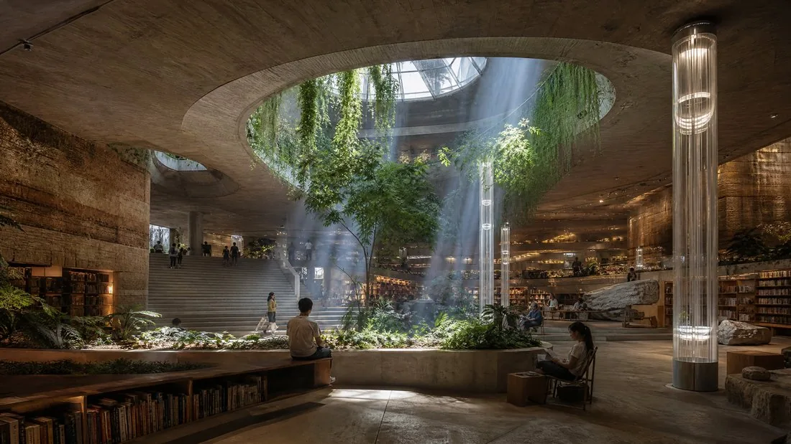
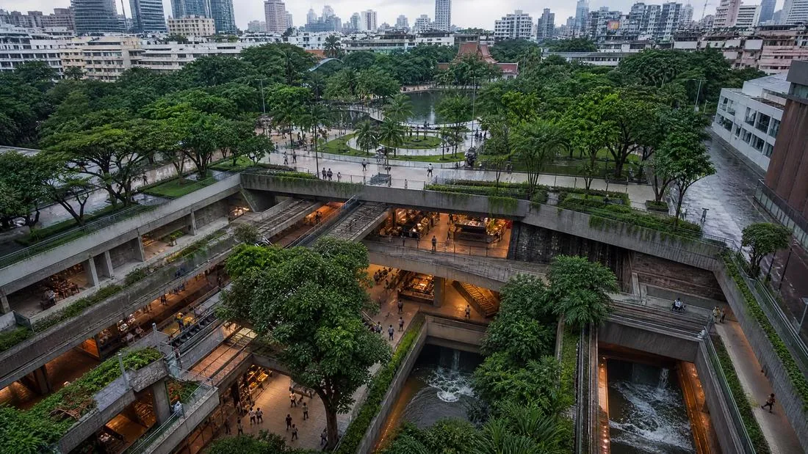

Journal
Underground Architecture: The New Inverted Verticality

As urban temperatures reach historic highs, architects are no longer looking only skyward — they're looking beneath their feet. Underground architecture is no longer synonymous with bunkers or metro tunnels; it now stands as an avant-garde answer to resilient, energy-lean, thermally stable urban living. This "inverted verticality" is redefining how overheated metropolises occupy space.
Earth as a Natural Insulator
The main advantage of underground construction lies in the thermal mass of the soil. A few metres down, temperature stays nearly constant year-round, offering natural protection against the extreme heatwaves now hitting tropical cities. This passive stability enables major energy savings by sharply cutting reliance on power-hungry air conditioning. The subsurface becomes a climate refuge: in an increasingly hot world, deep spaces are emerging as new sanctuaries of coolness — while also offering natural acoustic insulation and greater resilience against storms, all without sacrificing the skyline or surface green space.
The Natural Light Revolution
The historic barrier to underground architecture has always been the lack of natural light. That barrier is falling thanks to cutting-edge technology: sensor-guided heliostats track the sun's path to redirect its rays into light wells or high-performance fibre-optic systems, capable of carrying full-spectrum daylight down several dozen metres — preserving circadian rhythms and occupants' psychological wellbeing. Pioneering experiments such as New York's now-defunct Lowline, or the Earthscraper concepts (inverted skyscrapers) imagined for Mexico City, helped chart this path. They are now inspiring new interventions in Bangkok, where surface space is saturated and the climate increasingly punishing.

Depth Urbanism: The Case of Tropical Cities
In cities like Bangkok, underground architecture offers a double opportunity: escaping the humid heat and creating transport and retail hubs protected from seasonal flooding through drainage systems built into the structure itself. Sunken malls, recessed public plazas and buried libraries are becoming sought-after destinations, offering unmatched thermal comfort without straining the city's electricity grid.

Conclusion
Underground architecture marks the end of the "buried space" stigma. By combining light engineering with the earth's natural thermal resilience, architects are opening up a new urban dimension. Inverted verticality is not a retreat, but an intelligent, sustainable extension of habitat — proof that some of the most pressing answers to climate challenges lie just beneath our feet.